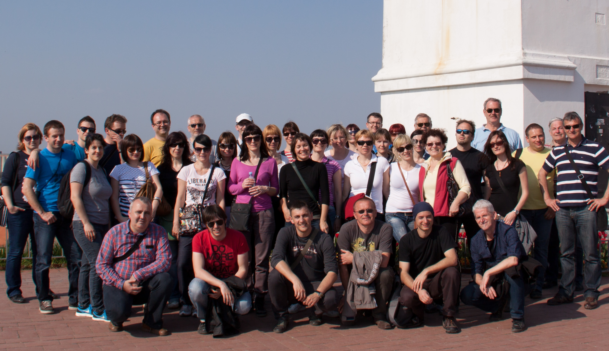
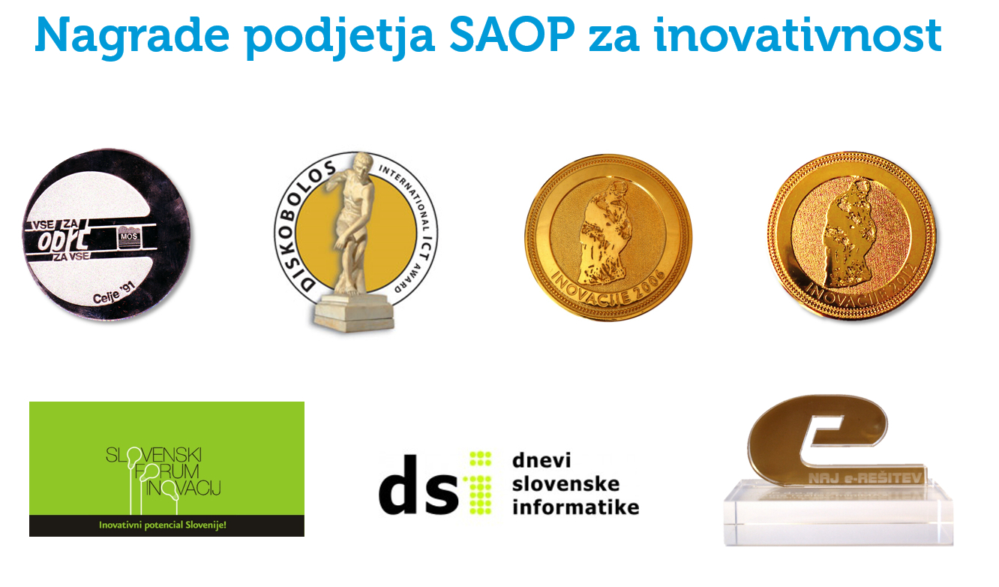
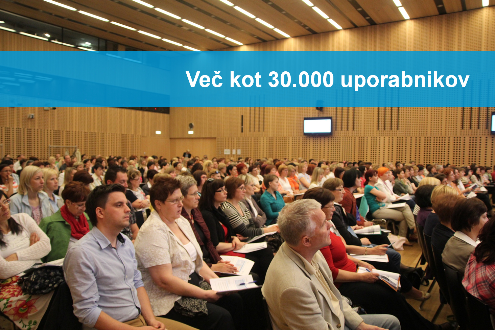

SAOP – vodilni informacijski sistemi
Podjetje SAOP je leta 1987 med prvimi na slovenskem tržišču ponudilo lastno programsko opremo. Revija Manager in časopis DELO v vseh teh letih uvrščata programsko hišo SAOP kot vodilnega ponudnika ERP sistemov za podjetja in javne zavode.
V podjetju SAOP je več kot 70 visoko izobraženih strokovnjakov, ki v pozitivni delovni klimi dnevno skrbijo za razvoj programov in izobraževanje uporabnikov. Prav zaradi pozitivnega vzdušja, ki se prenaša tudi na uporabnike, so prejeli nagrado Zlata nit za najboljšega zaposlovalca in certifikat Družini prijazno podjetje. SAOP posluje v skladu z vrednotami: zaupanje, učinkovitost, ustvarjalnost, partnerstvo, zanesljivost in prijaznost. 
V podjetju SAOP stalno iščejo priložnosti za sodelovanje z novimi zanimivimi sodelavci. Tako vsako leto nekaj mest namenijo študentom, ki pri njih opravljajo obvezno študijsko prakso in po potrebi študentsko delo. Njihov stalni strokovni razvoj omogoča, da stalno pridobivajo nove izkušene strokovnjake iz IT področja. Vsak potencialni kandidat za zaposlitev gre skozi sistematičen selekcijski postopek, ki ga za podjetje SAOP izvaja zunanje podjetje Taktika plus, ki je njihov stalni svetovalni partner pri delu z zaposlenimi.
Že več kot 30.000 uporabnikov v Sloveniji, Srbiji in na Hrvaške danes uporablja SAOP-jeva produkta –ERP informacijski sistem iCenter za srednje velika in velika podjetja ali zavode ter najbolj priljubljen spletni računovodski program miniMAX za malo podjetje ali računovodski servis. SAOP bo v letošnjem letu predstavil novo generacijo produktov Saopnet, ki temeljijo na najsodobnejših tehnologijah, obenem pa so že napovedali tudi vstop na tržišče Turčije.
PANOGA, PODROČJE
ZAHTEVAN KADER OZ. ZNANJE
NUDIMO
KONTAKT